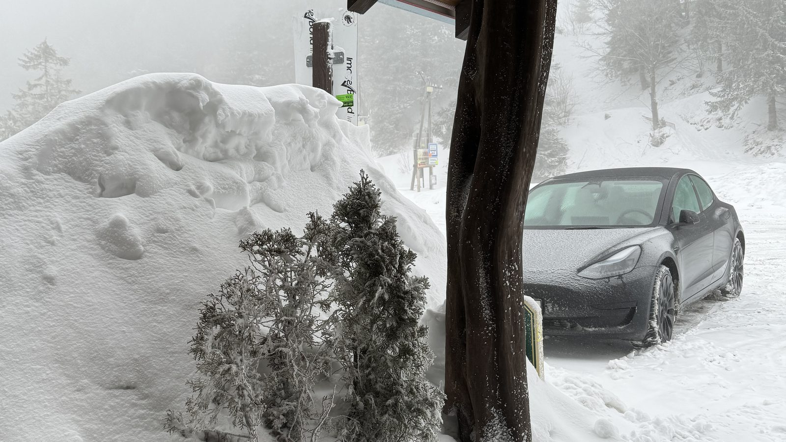

O koľko klesne dojazd
Pri teplotách okolo nuly a mierneho mrazu, aké sú na Slovensku bežné, rátajte s dojazdom o 20 až 30 % nižším než v lete. Energiu berie kúrenie, studená batéria je menej účinná a zimné pneumatiky aj mokrá vozovka zvyšujú odpor.
V extrémnom mraze je pokles väčší. V zimnom teste nórskej asociácie motoristov NAF z januára 2026 pri teplotách od −8 do −31 °C nedosiahlo katalógový dojazd ani jedno z 24 testovaných áut. V priemere jazdili o 37,6 % menej, než udáva výrobca podľa normy WLTP.
Ak vám auto v lete bez problémov pokryje bežný deň s rezervou, pokryje ho aj v zime. Problém nastáva len vtedy, keď je letný dojazd na hrane.
Spaľovacie auto má v zime rovnaký problém
Zimu cíti aj benzín a nafta, len to menej vidno, lebo tankovanie je rýchle a čerpacích staníc je veľa. Podľa amerického ministerstva energetiky klesá pri teplote okolo −7 °C hospodárnosť benzínového auta v mestskej jazde zhruba o 15 % oproti 25 °C. Pri krátkych jazdách do 5 až 6 km je to až o 24 % a pri hybridoch okolo 30 až 34 %.
Krátke jazdy v mraze sú pre spaľovací motor najhoršie. Studený motor beží na bohatšej zmesi, olej je hustý a motor sa často ani nezohreje na prevádzkovú teplotu skôr, ako dorazíte do cieľa. Práve studené štarty patria k tomu, čo motoru škodí najviac. Elektromotor nič také nepozná a od prvého metra pracuje naplno.
Čo naozaj pomáha
Predhrievanie, kým je auto v zásuvke
Najúčinnejšia rada. Ak auto ráno vykúrite, kým je pripojené, energia ide zo siete, nie z batérie. Odchádzate do teplého auta s plnou batériou. Odchod si nastavíte v aplikácii auta alebo priamo v aute.
Vyhrievané sedadlá a volant
Vyhrievanie sedadla a volantu spotrebuje zlomok energie oproti ohrievaniu celého vzduchu v kabíne. Pri kratších jazdách stačí nastaviť kúrenie o pár stupňov nižšie a zapnúť vyhrievané sedadlo.
Tepelné čerpadlo
Auto s tepelným čerpadlom kúri úspornejšie než auto s odporovým kúrením. Pri mnohých modeloch to bola príplatková výbava. Bez tepelného čerpadla však máte o jeden potenciálne problematický diel v aute menej.
Garáž
Auto, ktoré stojí cez noc v garáži, má teplejšiu batériu a v zime citeľne menšiu spotrebu na prvých kilometroch.
Rýchlonabíjanie v zime
Studená batéria sa nabíja výrazne pomalšie, pretože ju elektronika chráni. Ak prídete na rýchlonabíjačku po krátkej jazde v mraze, auto môže nabíjať len zlomkom výkonu.
Pomôže predkondicionovanie batérie: auto ju pred nabíjaním zohreje na ideálnu teplotu. Pri mnohých autách sa spustí samo, keď na rýchlonabíjačku navigujete v navigácii auta. Pri iných sa zapína ručne. Pozrite si v návode, ako to funguje vo vašom aute.
Pred dlhšou cestou v zime
- nabite na 100 % tesne pred odchodom, nie deň vopred,
- naplánujte zastávky s väčšou rezervou, napríklad príchod na nabíjačku s 15 až 20 %,
- navigujte na nabíjačku cez navigáciu auta, aby sa batéria predhriala, ak auto touto možnosťou disponuje,
- počítajte s tým, že na diaľnici pri 130 km/h je spotreba v zime najvyššia. Jazda o 10 km/h pomalšie predĺži dojazd viac, než by ste čakali.
Mýtus: v zápche zamrznem
V stojacej kolóne elektromobil takmer nespotrebúva. Kúrenie berie rádovo jednotky kilowattov, takže s polovičnou batériou vydržíte kúriť mnoho hodín. Spaľovacie auto v rovnakej situácii spaľuje palivo celý čas, aj keď stojí.
Časté otázky
Koľko percent dojazdu stratí elektromobil v zime?
Pri bežnej slovenskej zime okolo nuly a v miernom mraze zhruba 20 až 30 % oproti letu. V extrémnom mraze pod −20 °C aj viac ako tretinu oproti katalógovému dojazdu.
Škodí mráz batérii elektromobilu?
Nie. Mráz dočasne znižuje dojazd a rýchlosť nabíjania, batériu však trvalo nepoškodzuje. Elektronika ju pri nízkych teplotách chráni a v prípade potreby ohrieva.
Oplatí sa nechávať elektromobil v zime v zásuvke?
Áno, ak máte možnosť. Ráno ho predhrejete zo siete, nie z batérie, a niektoré autá počas pripojenia udržiavajú batériu v teple.
Vyberte auto podľa zimného dojazdu
Náš výber elektromobilu počíta so zimným dojazdom, nie s katalógovým. Sedem otázok o tom, ako jazdíte, a ukáže autá, ktoré vám budú stačiť aj v januári.
 Ako sa starať o batériu
Ako sa starať o batériu Elektromobilom do Chorvátska
Elektromobilom do Chorvátska Koľko stojí jazda na elektrinu
Koľko stojí jazda na elektrinu